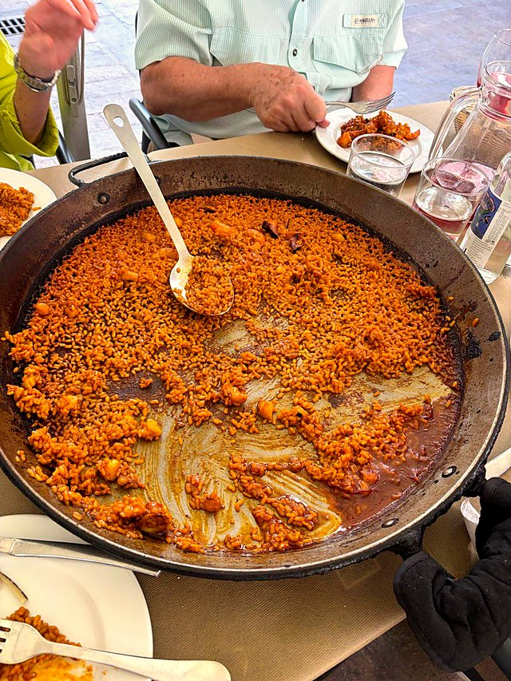

Paseo privado por el centro de Valencia
150 €por grupo, hasta 4
Señal de 30 € · cancelación gratis hasta 48 h antes
El calendario lo gestiona Cal.com (EE. UU.). Uso tus datos solo para organizar tu paseo. Política de privacidad
Por el camino
- Torres de Serranos
- Plaza de la Virgen
- Catedral y Micalet
- La Lonja
- Mercado Central
- Horchata
4 o 6 horas: la ruta la montamos juntos. ¿Llegas en crucero? (EN) →
Preguntas
Vengo en crucero. ¿Llego a tiempo al barco?
Planifico el paseo según tu hora de embarque y acabamos con margen de sobra. Si vamos justos, el taxi de vuelta al puerto lo pago yo.
¿Más de 4 personas?
Hasta 8. Cada persona extra son 10 € por hora. Pon el número en la reserva.
¿Cómo se paga?
Una señal de 30 € por PayPal reserva el día. El resto al acabar el paseo, en efectivo o PayPal. Si cancelas hasta 48 horas antes, te devuelvo la señal.
¿Vale para niños o abuelos?
Sí. Valencia es llana. Lo hacemos más corto y con paradas para café.
¿Y si llueve?
El Mercado Central y la Lonja están cubiertos, o lo movemos a otro día.